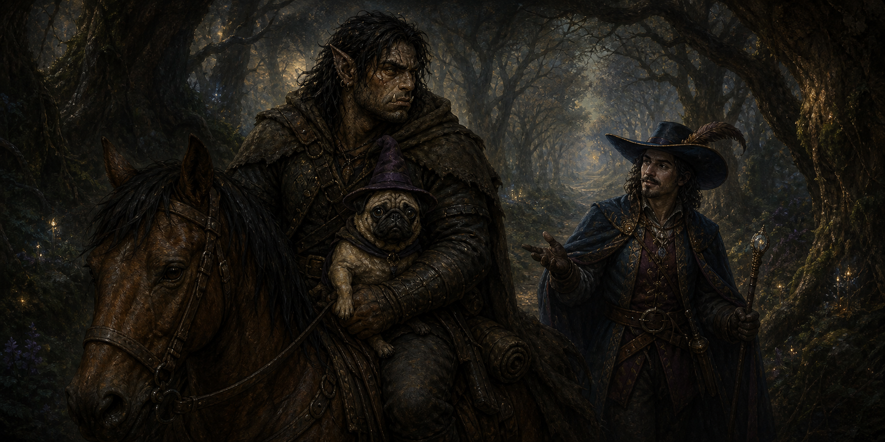

Chapter 1: Mesmerized
Mesmerized


Mesmerized
15048.11.20
朝著夏庭森前進時，布朗和瑪芬先生騎著馬走進森林。森林裡愈走愈容易迷失方向，因為四周景色幾乎全都一模一樣。
又餓又累的布朗停下馬，坐下來稍作休息。
布朗試著在林中尋找能吃的東西，但突然想起自己竟然忘了把馬綁好。那匹才剛買到不久的馬立刻拔腿逃跑。布朗追在後頭，試圖從背包裡丟出肉塊作為誘餌，好讓馬停下來，卻還是失敗了。
就在這時，一頭野狼猛地從旁邊竄出，撲到馬身上，卻沒有咬下去，而是趴在昏倒的馬身上回頭看著布朗。正當布朗還在疑惑時，瑪芬先生的聲音出現在他腦海裡：「我不是早就說了，要買頂級飼料給我嗎！」那頭狼慢慢把外貌變回原本的巴哥犬模樣，布朗這才完全確信自己的猜測：那天在波馬贊遇到的野狼，似乎正是由瑪芬先生變化而成。
在等昏倒的馬醒來時，布朗發現瑪芬先生也睡著了。就在這時，他似乎聽見了一陣歌聲，忽遠忽近。布朗感到困惑，但直覺告訴他必須避開那歌聲。從歌聲帶來的感覺判斷，他猜測那是來自仙靈的歌，帶有迷惑人心的力量。
布朗奮力抵抗那帶著魔性的仙靈歌聲，先把昏倒的馬踢醒，再抱起睡著的瑪芬先生，翻身上馬，急忙朝森林另一頭奔去。
騎了數十分鐘後，歌聲終於消失。布朗這才放慢馬速，開始尋找附近能吃的食物。坐在馬背上放眼望去，完全看不到任何可食用植物的跡象，於是布朗決定下馬仔細查看。就在馬蹄邊，他發現了紅色、黃色和藍色三種不同的果實。紅色最大，大約有蘋果那麼大；黃色稍小一些，像檸檬；藍色最小，只比藍莓大不了多少。布朗隨手摘了三顆紅果、三顆黃果，以及十顆藍果。
正當布朗準備把藍色果實塞進嘴裡時，前方忽然傳來一個中年男子打招呼的聲音。他抬頭一看，只見一名穿著正裝、面帶微笑的男子站在那裡。男子自稱羅納德，大家都叫他魔術師羅納德。羅納德表示，藍色果實是他自己種的，可以放心吃，而且吃了之後會非常有飽足感。布朗吃下一顆後，果然立刻飽了。至於紅色與黃色的果實，則不是他種的，而是附近農民的作物。
為了表達善意，羅納德從身後拿出一頂魔術師帽，直接套在瑪芬先生頭上。布朗看了之後覺得意外地適合，十分開心。接著，布朗向羅納德詢問關於夏庭森的資訊。羅納德表示，夏庭森是個非常無趣的地方，那裡的人都很嚴肅，做的事也一點都不好玩，他完全不理解布朗為什麼會想去那裡。不過如果布朗堅持要去，他願意親自帶路。幾番討論後，布朗依然決定還是要去夏庭森看看。
由於羅納德似乎對植物相當熟悉，布朗便試探著問起他見過哪些顏色的花，也順便詢問他是否看過黑色的花。聽見這句話，羅納德的眼睛立刻亮了起來。布朗表示，自己曾遇過看過黑色花朵的人，而羅納德則希望布朗能把那個人介紹給自己認識。他說，自己一直很想親眼見見那種傳奇般的「黑蓮花」。
布朗對羅納德是否值得信任仍抱持懷疑。他暗示瑪芬先生，想聽聽牠的想法，但瑪芬先生並沒有再透過心靈感應回應他。布朗只好找了個藉口，把瑪芬先生帶到一旁，確認不會讓羅納德聽見後，再仔細詢問牠。
可是無論布朗怎麼問，瑪芬先生始終沒有回應，只是一味地汪汪叫，讓布朗不禁懷疑牠是不是中了什麼魔法。
直到日落時分，布朗和羅納德才終於抵達夏庭森。兩人就近找了一間酒館，布朗請羅納德吃飯喝酒，表達對他帶自己來到這裡的謝意，而羅納德則直接幫布朗把今晚住宿的費用付了。
吃飽之後，兩人先各自回到自己的單人房稍微整理。布朗再次向瑪芬先生確認牠到底還能不能溝通，卻發現瑪芬先生似乎完全無法理解他的意思。失望之餘，布朗只好收拾好東西，到一樓和羅納德會合，兩人決定去街上晃晃。
入夜後的夏庭森，除了他們剛剛離開的酒館外，布朗眼前只看見兩間還亮著的店。一間同樣是酒館，裡頭吵鬧喧嘩，非常熱鬧；另一間則是店裡沒有半個客人，只有老闆一個人安靜地待在裡頭。布朗注意到羅納德似乎對這間店有點興趣，追問之下才知道，羅納德以前從沒見過這家店真的開門營業。
兩人走進店裡後，老闆熱情地招呼他們。布朗看得出來，這是一間販賣各種礦石的店。在老闆介紹下，他得知除了礦石外，店裡還販售各式珍貴寶石與鑽石。除此之外，老闆也帶兩人走到一個角落，拿出了自己雕刻的作品。
那些雕工精細得驚人，布朗卻認不出雕像原型是誰。老闆向他解釋，那是最近剛過世的國王巴納沃二世，他特地雕了這尊小像作為紀念。羅納德看了之後非常感興趣，立刻接過那尊雕像，爽快付了錢。這在布朗眼中相當意外，因為他幾乎沒見過羅納德對什麼事情表現得這麼熱衷。
在布朗追問下，老闆表示自己沒有製作一般人形生物以外的雕像，但他花了點時間，還是翻出另一件作品：一尊通體黝黑、表面光滑、摸起來冰涼的小雕像。乍看之下像是人形生物，卻又不完全像人，布朗一時想不到自己曾見過哪種生物長成這樣。仔細再看，又有幾分像是人與野獸的混合體。布朗拿在手裡研究了一會兒，最後還是把它買了下來。
離開前，老闆提醒布朗，說他的狗似乎指甲有點太長了，最好留意一下。「如果你需要幫忙，隨時可以來找我。我叫弗萊迪。再見了，布朗。」
回到酒館後，雖然時間還早，但夏庭森已經沒有其他讓布朗想繼續探索的地方了，於是他準備休息。睡前他想起弗萊迪提到瑪芬先生的指甲，便試著替這頭如今無法和自己對話的小野獸磨指甲。可顯然還戴著帽子的瑪芬先生瘋狂抗拒。布朗甚至試著用繩子把牠綁起來，但很快意識到瑪芬先生已經開始啃咬繩索。為了不讓繩子被咬斷，布朗只好作罷，決定明天再試。
布朗仔細研究著自己買下的那尊小雕像，甚至試著把它摔到地上，卻發現它堅硬得驚人，毫髮無傷，反倒是落地聲大得讓布朗擔心會吵醒其他住客。把玩一陣子後，布朗最終決定先睡了。
15048.11.21
布朗很確定自己那一晚做了夢，但無論怎麼想，都想不起夢見了什麼。
15048.11.20
As he headed toward Shartingson, Brown rode into the forest with Mr. Muffins. The deeper they went, the easier it became to lose their way, because every part of the forest looked the same.
Hungry and tired, Brown stopped his horse and sat down to rest.
Brown tried to search the woods for something edible, but suddenly realized he had forgotten to tie up the horse. The animal, which he had only just acquired, immediately bolted. Brown ran after it and tried tossing pieces of meat from his pack as bait to make it stop, but it did not work.
Then, out of nowhere, a wolf sprang from the side and pounced on the horse. It did not bite, though. Instead, it lay atop the unconscious animal and turned to look at Brown. As Brown stood there confused, Mr. Muffins's voice appeared in his mind: "I told you, didn't I? You should have bought me premium feed!" The wolf slowly shifted back into the familiar shape of the pug. At that point, Brown could no longer doubt it. The wolf he had seen that day in Bomozan really had been Mr. Muffins in another form.
While he waited for the horse to wake up, Brown noticed that Mr. Muffins had fallen asleep as well. Then he thought he heard singing somewhere nearby, fading in and out. Brown was puzzled, but instinct told him to avoid it. Judging by the feeling it gave him, he guessed that it was the song of some fey creature, something with the power to charm those who heard it.
Brown fought back against the enchanting fey song, kicked the unconscious horse awake, scooped up the sleeping Mr. Muffins, mounted up, and hurried toward the far side of the forest.
After riding for several dozen minutes, the song finally disappeared. Only then did Brown slow the horse and begin searching for food nearby. From horseback he could not see any obvious edible plants at all, so he got down to take a closer look. Near the horse's hooves, he found three kinds of fruit: red, yellow, and blue. The red ones were the largest, about the size of apples. The yellow ones were a bit smaller, about the size of lemons. The blue ones were the smallest, not much bigger than blueberries. Brown casually picked three red fruits, three yellow fruits, and ten blue ones.
Just as Brown was about to put one of the blue fruits into his mouth, he heard a middle-aged man greeting him from straight ahead. Looking up, he saw a smiling man in formal clothes. The stranger introduced himself as Ronald, though people usually called him Ronald the Magician. Ronald explained that the blue fruits were his, perfectly safe to eat, and extremely filling. Brown ate one and immediately felt full. The red and yellow fruits, on the other hand, were not his at all, but products grown by farmers nearby.
To show his goodwill, Ronald reached behind him, produced a magician's hat, and placed it on Mr. Muffins's head. Brown thought it suited the pug surprisingly well and was delighted. He then asked Ronald about Shartingson. Ronald said it was a very boring place, full of serious people doing joyless things, and that he could not understand why Brown wanted to go there. Still, if Brown insisted, he would be willing to guide him there. After some discussion, Brown decided he still wanted to see Shartingson for himself.
Since Ronald seemed to know a great deal about plants, Brown cautiously asked him what colors of flowers he had seen, and whether he had ever seen a black one. At that, Ronald's eyes lit up immediately. Brown said that he had met someone who had seen a black flower, and Ronald eagerly asked to be introduced to that person. He said he had always wanted to see the legendary black lotus with his own eyes.
Brown was still not sure whether Ronald could be trusted. He gave Mr. Muffins a hint, hoping to hear the dog's opinion, but Mr. Muffins offered no telepathic response. Brown made an excuse, pulled Mr. Muffins aside, and made sure Ronald could not overhear before questioning him more carefully.
But no matter what Brown asked, Mr. Muffins never replied. He only barked like an ordinary dog, which made Brown wonder whether some sort of magic had been placed on him.
By sunset, Brown and Ronald finally reached Shartingson. They found a nearby tavern, and Brown treated Ronald to food and drink to thank him for guiding the way. In return, Ronald simply paid for Brown's lodging that night.
After dinner, the two of them each returned briefly to their own single rooms to sort themselves out. Brown again tried to see whether Mr. Muffins could still understand him, but it seemed the pug no longer grasped a word he said. Disappointed, Brown packed up, went downstairs to meet Ronald, and the two decided to take a walk through town.
Once night had fallen, Brown saw only two other lit establishments in Shartingson besides the tavern they had just left. One was another tavern, loud and bustling with activity. The other was a shop with no customers inside, only its owner quietly waiting alone. Brown noticed that Ronald seemed interested in the shop, and after asking him about it, learned that Ronald had never actually seen it open before.
They went inside, where the owner greeted them warmly. Brown could tell the place sold all sorts of ores. The owner explained that, in addition to minerals, he also dealt in valuable jewels and diamonds. He then led the two of them into a corner and brought out some carvings he had made himself.
The craftsmanship was remarkably fine, though Brown could not identify the figure the carving was based on. The owner explained that it was the recently deceased King Benevol II, and that he had carved the small statue in commemoration. Ronald showed immediate interest, took the figurine at once, and paid without hesitation. That surprised Brown, who had rarely seen Ronald so genuinely excited about anything.
When Brown kept asking questions, the owner said that he usually did not make statues of anything except humanoids, but after a little searching he brought out another work: a small sculpture, dark and smooth all over, cool to the touch. At first glance it looked humanoid, but not entirely human. Brown could not think of any creature he had ever seen that matched it. Looking closer, it resembled some blend of human and beast. Brown turned it over in his hands for a while, then decided to buy it as well.
Before they left, the owner told Brown that his dog looked as if its nails had grown a little too long and that he should keep an eye on that. "If you ever need help, come find me. My name is Freddy. Goodbye, Brown."
Back at the tavern, although it was still early, there was nothing else in Shartingson that Brown felt like exploring, so he prepared to rest. Before bed, he remembered Freddy's comment about Mr. Muffins's claws and tried to trim them for the small beast, who still could not speak with him. Mr. Muffins, still wearing the hat, resisted furiously. Brown even tried to tie him up with a rope, but quickly realized the pug had already started gnawing at it. Not wanting the rope to be destroyed, Brown gave up and decided to try again tomorrow.
Brown spent some time examining the little statue he had bought and even tried dropping it onto the floor, only to find that it was astonishingly sturdy and completely undamaged. The impact, however, made enough noise to worry him that he might wake the other guests. After playing with it for a while longer, Brown finally decided to sleep.
15048.11.21
Brown was certain that he had dreamed that night, but no matter how hard he tried, he could not remember what he had dreamed about.